(manual revision 5 November 2026, updated from revision 15 March 2016)
APRS 1200 baud/AFSK and 9600/GMSK packet decoding/encoding
APRS station and standalone digipeater
APRS/RF to APRS-IS IGate
APRS-IS to APRS/RF forwarding
GPS module support for current position beaconing
GPS SmartBeaconing position reports
KISS protocol TNC via external Bluetooth interface
KISS packet output and APRS-IS protocol simple TCP/IP server
Weather station support
WeatherUnderground service reporting
External telemetry module support
Input voltage measurement
Digital thermometer input
WWW interface for administration
Telnet interface for monitoring
NTP support for time synchronization
Statistics upload to HTTP server
Remote firmware update via TFTP
Firmware v1.10–v1.13 update of this manual prepared by Manuel EA7JRS. This is not an official Microsat publication. · github.com/EA7JRS/wx3in1
Table of Contents
About this revision
This revision updates the original WX3in1 Plus 2.0 manual (firmware v1.09, revision 15 March 2016) to firmware and Configurator v1.13 (Configurator package wx3in1plus20_configurator_v113). Everything that was correct in the original manual has been kept. The changes are listed below.
New or extended in this revision:
GPS SmartBeaconing and the new “GPS SmartBeaconing” Beacons sub-tab (firmware v1.12) – chapters 2.5 and 10.7.1,
“Enable if” conditions for beacons, including the new “No APRS-IS” condition (v1.10) – chapter 10.7,
Statistics upload (v1.10, experimental) – chapters 2.18 and 10.11.5,
Callsign filter extended from 10 to 20 entries (v1.11) – chapter 10.6.4,
APRS-IS packets to RF filter extended from 12 to 24 entries, with the “Bulletin” type described (v1.11) – chapter 10.9.5,
new internal telemetry sources and the 999 maximum for packet statistics (v1.12) – chapters 2.11 and 10.12.2,
WWW features added since v1.02 (oscilloscope, output tone generator, RF heard list, global TX off, callsign in the page title) – chapter 2.16,
WWW “Alternative logo password” field – chapter 10.11.1,
“Other” Tab with voltage measurement calibration (v1.07, not described before) – chapter 10.15,
RSS-131 gamma monitor settings and the <gamma> beacon string – chapters 10.7 and 10.14.7,
appendices with the firmware change history (A) and the Configurator value ranges (B).
Corrections of the original text:
Latitude/longitude format: “YY” and “ZZ” are minutes and hundredths of a minute, not seconds (10.5),
area filter descriptions for “Area RAD1” and “Area RECT0” referred to RAD0 (10.6.2),
the n-N example used “N” instead of “n” (10.6.2),
the gamma monitor is named RSS-131 (it was written “RS-131”),
obsolete firmware file selection text removed from 10.3,
various typing errors.
Screenshots marked “Configurator v1.13 layout” were reconstructed from the form definitions stored inside the v1.13 Configurator executable and filled with its default configuration values. They show the real field names and positions of v1.13. All other screenshots were taken with Configurator v1.09 and are still valid for v1.13, because those Tabs did not change. Only the version number in their title bar is different.
The sources of this manual, the wx3cfg tool that checks and fixes .cfg files with the same rules as Configurator v1.13, and a configuration template for Spanish (EA) stations are published at https://github.com/EA7JRS/wx3in1. Corrections and suggestions are welcome there.
1. Technical parameters
Dimensions
126x99x43 mm
Weight
270g
Supply voltage
12VDC typ. (9 - 16VDC)
Power consumption
150mA
Operation temperature
-20°C / +70°C
Humidity
95% max.
Ethernet
10/100 Base-T
Power connector
5.5/2.1mm connector
Telemetry module connector
Terminal block, RS-485 2-wire standard
Thermometer connector
Terminal block, DS18B20/DS18S20 standard
Serial ports connector
Mini DIN 6-pin, 2 ports, RS-232 standard
Radio connector
Mini DIN 6-pin
PC connector
USB-B (printer cable type)
2. Device features
2.1. APRS station
WX3in1 Plus 2.0 allows you to generate APRS data packets with information field defined by user and send them in a specified interval. In this way, it is possible to send beacons, objects, weather and telemetry data.
2.2. APRS digipeater
The main purpose of the device is receiving and sending APRS data packets via amateur radio transceiver. WX3in1 Plus 2.0 is capable of receiving an APRS packet, decoding the sender, recipient, path and information field. Then actions are performed in accordance with the options configured by user:
Packet is digipeated via the APRS network,
Packet is sent to the APRS-IS server,
Packet is ignored if it was corrupted.
Device firmware implements the following mechanisms:
Checksum Verification - packets with errors are ignored,
Anti-flood - packets repeated in a short time interval are not forwarded,
Path checking - a decision whether to digipeat a packet or not is made using a filter stored in configuration data of the device. User defines whether to forward WIDE1-1, WIDEn-N, SPn-N, or local path packets and the maximum value of N (so called New-N paradigm),
Area filter – allows to digipeat packets only from stations located within a defined radius from the device, within a defined radius from a point on the map or within a rectangle defined by north-western and south-eastern point on the map,
Callsign filter - a simple callsign filter (up to 20 entries) allows you to add stations to black list (these stations will be ignored) or white list (only these stations will be digipeated).
2.3. RF -> APRS-IS forwarding (I-Gate)
WX3in1 Plus 2.0 allows you to connect to APRS-IS server network. After logging to selected server, it is possible to gate data received from the APRS radio network. All packets with correct format and checksum are forwarded to APRS-IS.
2.4. APRS-IS -> RF forwarding
WX3in1 Plus 2.0 allows you to receive packets from APRS-IS server. Then a decision is made whether to gate a packet to RF or not. It is possible to forward different types of packets based on a filter defined in device configuration. APRS message packets can be forwarded to stations which were heard on RF within limited number of digi-hops (local RF), and they are repeated up to 3 times in case of no ACK packet received from message recipient.
2.5. GPS module support
WX3in1 Plus 2.0 allows you to connect an optional GPS receiver module to report current position in APRS and APRS-IS beacons. Therefore it is possible to use it with a moving station and display a real-time position on the map.
Starting with firmware v1.12 the device also supports GPS SmartBeaconingv1.12. With SmartBeaconing enabled, position reports are not sent at a fixed interval. The reporting rate follows the speed and the changes of course received from GPS: frequent reports when driving fast or turning, rare reports when stopped or moving slowly. Position reports can be encoded in Mic-E, plain text or Base-91 (compressed) format. See chapter 10.7.1 for configuration details.
2.6. Bluetooth interface support and a KISS TNC operation
Firmware version 1.08 adds a functionality of a KISS protocol TNC allowing to forward received packets via optional Bluetooth interface connection to an external device (e.g. Android smartphone). It is also possible to receive packets from Bluetooth and send them to RF. Thereby it is now possible to use the device as a Bluetooth TNC.
Tests were made with APRSDroid 1.3.0 giving a nice ability to show received packets on the application map and allowing to send packets from mobile phone to RF.
2.7. KISS via TCP/IP packet output
This feature allows any networked device to connect to WX3in1 Plus 2.0 TCP/IP port and receive packets in KISS format without a need to use of a Bluetooth module. In firmware v1.13 KISS via TCP/IP is still only one direction (RF → TCP/IP), as stated in the Configurator. KISS via TCP/IP was successfully tested with APRSDroid 1.3.0.
2.8. APRS-IS simple server
APRS-IS simple server allows any networked device to connect to WX3in1 Plus 2.0 TCP/IP port and receive packets in APRS-IS format. APRS-IS simple server connection is bi-directional (RF → TCP/IP, TCP/IP → RF) and it also allows to exchange packets with currently connected APRS-IS T2 server. This feature allows third-party software to use WX3in1 Plus 2.0 as a gateway between network and radio channel.
2.9. Weather station support
WX3in1 Plus 2.0 allows you to receive weather information from weather stations using RS-232 cable. Data is then encoded into the APRS packet and may be sent to APRS/APRS-IS network at specified intervals.
Supported weather stations:
LaCrosse/Technoline WS-2300,
LaCrosse/Technoline WS-2350,
Peet Bros Ultimeter 100,
Peet Bros Ultimeter 800,
Peet Bros Ultimeter 2000,
Peet Bros Ultimeter 2100,
Davis Vantage Pro (with RS232 datalogger),
Davis Vantage Pro2 (with RS232 datalogger),
Davis Vantage Pro Plus (with RS232 datalogger),
Davis Vantage Pro2 Plus (with RS232 datalogger).
2.10. Weather Underground service support
Weather Underground is one of the biggest weather services available on the web. It allows you to create an account for your weather station and send weather reports which are stored in their database. Data is then available for view in form of graphs, tables or a simple web page applet showing current conditions in your location. Anyone can send his weather data using a simple internet protocol.
In WX3in1 Plus 2.0 you can configure your Weather Underground account name, password and send weather data in preconfigured time intervals. You can also send your weather data in “rapid fire” mode every 5 seconds and see your weather changes realtime using Weather Underground web page applet.
Firmware v1.13 contains a fix needed after changes Weather Underground made on their serversv1.13. If your device uses an older firmware and stopped reporting to Weather Underground, update it to v1.13.
2.11. Telemetry reports
Device allows you to send telemetry reports to APRS/APRS-IS network. Possible telemetry channels are:
input voltage,
received APRS packets in 1 hour or 10 minutes window,
digipeated APRS packets in 1 hour or 10 minutes window,
packet decoding efficiency in 1 hour window or in the whole range from device power-up,
ratio of digipeated to received packets, in 1 hour window or in the whole range from device power-upv1.12,
ratio of digipeated packets to detected packet starts, in 1 hour window or in the whole range from device power-upv1.12,
temperature from optional DS18B20 digital thermometer connected on the rear panel of the device.
Starting with firmware v1.12 the maximum telemetry report value for packet statistics is 999 (it was 255 before).
2.12. WXTelemetry module support (analog channels)
You can get more telemetry report options when using external WXTelemetry module. With WXTelemetry module you can measure and send following values:
two current measurement inputs,
two voltage measurement inputs,
DS18B20 digital thermometer input.
2.13. WXBits telemetry module support (digital inputs/outputs)
You can use an additional WXBits module for reporting of digital input channels and administration of output channels. WXBits is a module which includes:
4 optocoupler digital inputs,
4 mosfet transistor open-collector outputs.
States of both inputs and outputs can be reported in APRS telemetry reports and outputs can also be controlled with WX3in1 Plus 2.0 telnet interface.
2.14. RTC clock and NTP time synchronization support
With WX3in1 Plus 2.0 you always have the current date and time thanks to NTP support. Device connects to a defined NTP server every few minutes and checks for the current time. Local passage of time is handled by on-board RTC clock with a battery.
2.15. Firmware and configuration updates
In WX3in1 Plus 2.0 you can do all firmware and configuration updates over an USB cable connection from your PC using a simple Configurator application. If your device is located in a remote location, you can update firmware and configuration via the internet using TFTP protocol.
2.16. Remote WWW access
With WX3in1 Plus 2.0 device it is possible to configure and view device statistics remotely via web browser. Since the v1.09 manual was written, the WWW interface offers the following tools:
input adjustment page with the WX3in1 Oscilloscope window and the input levels of the last 10 received packets (v1.02),
output adjustment page which sends a 1200 Hz / 2200 Hz tone pattern for deviation adjustment (v1.02),
device MAC address shown on the network settings page (v1.02),
advanced “RF heard stations” list (v1.03),
an option to turn off TX globally, in the output adjustment page (v1.09),
device callsign shown in the web page title (v1.10)v1.10.
2.17. Remote telnet access
You can connect to your WX3in1 Plus 2.0 device with a telnet client. Telnet connection allows you to check all device operation messages, read device statistics, send some test packets useful during installation, control digital outputs of WXBits module, and much more.
2.18. Statistics upload NEW v1.10
Firmware v1.10 adds an experimental statistics upload feature. The device periodically sends its statistics to an HTTP server defined by the user (server name, port and path), identified with a numeric device ID. See chapter 10.11.5.
3. Connectors and device status leds
3.1. Front panel
There are 6 leds on the front panel which inform about the status of device operation. The following image shows the location of front panel LEDs and connectors.
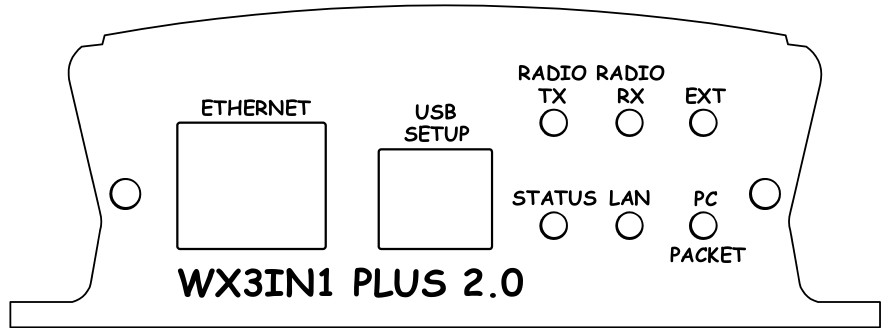
Leds:
Radio TX - The red led lights during transmission - the device sends an APRS data packet,
Radio RX - Yellow led illuminates when receiving a signal from the radio (indicates the channel is busy),
Ext - Green led indicates proper communication with external device, it blinks after reception of:
correct weather data from weather station,
GPS NMEA sentence with fixed position,
temperature from external sensor,
telemetry data from WXTelemetry/WXBits.
Status - Green led indicates the status of the device (led lights up regularly every 3 seconds, indicating correct operation),
Lan TX - Blue led illuminates when sending TCP/IP packet to the Ethernet,
PC/Packet – This red led has two purposes. In PC configuration mode it blinks regularly and in device working mode it blinks when there is a proper packet received from the radio.
Connectors:
Ethernet - RJ45 (ethernet network connection),
USB - a USB socket-B (printer type), used to connect to a computer for configuration and firmware update.
3.2. Rear panel
The following image shows the location of rear panel LEDs and connectors.
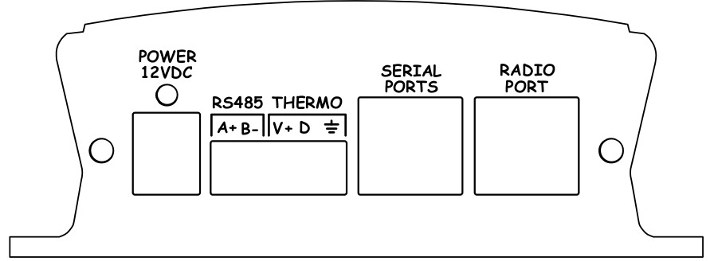
Leds:
Power led - The red led above the power connector indicates that the power is applied.
Connectors:
Power – 5.5/2.1 type power connector (center pin is a power supply plus),
RS485 – terminal block connector for serial port for WXTelemetry/WXBits,
Thermo – terminal block connector for DS18B20/DS18S20 connector,
Serial ports – Mini DIN 6-pin connector for dual serial ports and 5V voltage output (the same pinout as PLXDigi/PLXTracker),
Radio connector - Mini DIN 6-pin connector for radio audio in, audio out, GND, and PTT.
Warning: PTT switch is operated using MOSFET transistor. Please make sure that there are no short-circuits in radio cable. Shorting PTT output to positive voltage can result in transistor damage.
Serial port 5V voltage output is protected with diode and polymer fuse. Maximum output current should not be above 100mA.
If you are going to use both WXTelemetry and WXBits external telemetry modules, you should connect them in a chained style: A+ and B- pair go from WX3in1 to first telemetry module, and then from first telemetry module to the second one. From a schematic point of view, both modules must be connected in parallel (A+ from WX3in1 goes to A+ of the first module, and then to A+ of the second, similarly with B-). Never connect A+ to B-.
4. Radio connector
Radio MINI DIN 6pin connector is placed on the rear panel of WX3in1 Plus 2.0. Pinout of this connector is described in the following figure.
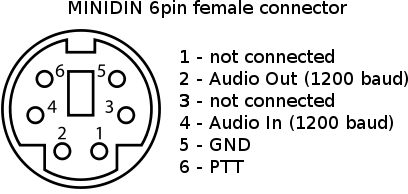
Connector pinout description:
not connected,
APRS audio output from the device to the microphone input of the radio. This output also acts as a PTT by shorting pin to ground through a 2k2 resistor - an option for portable radios that do not have a separate PTT input (selectable in configuration software, 2k2 resistor is built-in),
not connected,
APRS audio input from radio to WX3in1,
Ground pin,
PTT output - if the external PTT output is selected in device configuration, this pin is shorted to ground while broadcasting.
Warning: PTT switch is operated using MOSFET transistor. Please make sure that there are no short-circuits in radio cable. Shorting PTT output to positive voltage can result in transistor damage.
For handheld radios which use 2k2 resistor on microphone input line you don't need to use any external resistor or external PTT (pin 6) output. Connect pins: 2 (audio output), 4 (audio input), 5 (ground) and set “PTT:” to “2k2 resistor” in device configuration. 2k2 resistor is located inside of the device.
4.1. Audio output level regulation
In WX3in1 Plus 2.0, audio output is configured in software. Possible output level ranges from 40mV to 900mV with output impedance of around 500 Ohm. Since firmware v1.02 the WWW output adjustment page can send a 1200 Hz / 2200 Hz tone pattern, which makes deviation adjustment easier.
4.2. Audio input level
In WX3in1 Plus 2.0 audio input level amplifier is configured in software. Default amplifier setting is configured to +0db and with this amplifier setting device should be able to decode packets with input levels as low as 25mV p-p and as high as 1V p-p. In case of low-level signals it is recommended to increase input amplifier settings for best decoding efficiency. The WWW input adjustment page (oscilloscope window and levels of the last 10 received packets) helps to find the best setting.
4.3. High-pass filter jumper
There is only one jumper on a PCB inside of the device (located behind radio port connector). It should be open for proper operation of 1200/AFSK baudrate APRS decoding. If you are going to use 9600/GMSK packet decoding, then you should close this jumper (for flat frequency response down to DC). Closing this jumper may lead to poor 1200/AFSK baudrate decoding for some radios.
5. External devices connectors
5.1. RS-232 serial ports connector
In WX3in1 Plus 2.0 the MINI DIN 6pin female connector is used for RS-232 serial ports and 5V voltage output.
MINI DIN 6pin connector pins description:
Pin 6 – RS-232 Port 1 RXD (default: weather station),
Pin 4 – RS-232 Port 2 TXD (default: GPS module),
Pin 2 – GND,
Pin 1 – 5V output, do not short-circuit, max. current 100mA,
Pin 3 – RS-232 Port 1 TXD (default: weather station),
Pin 5 – RS-232 Port 2 RXD (default: GPS module).
Serial port 5V voltage output is protected with diode and polymer fuse. Maximum output current should not be above 100mA.
If Bluetooth interface support is enabled in device configuration, then RS-232 Port 2 is reserved for Bluetooth connection status check. In this case RS-232 Port 1 works with baudrate of 9600 for proper Bluetooth interface communication.
5.2. RS-485 connector
RS-485 connector is intended to be used with WXTelemetry and WXBits external modules.
If you are going to use both WXTelemetry and WXBits external telemetry modules, you should connect them in a chained style: A+ and B- pair go from WX3in1 to first telemetry module, and then from first telemetry module to the second one. From a schematic point of view, both modules must be connected in parallel (A+ from WX3in1 goes to A+ of the first module, and then to A+ of the second, similarly with B-). Never connect A+ to B-.
5.3. Thermometer connector
Thermometer connector is intended to be used with DS18B20 or DS18S20 digital thermometer. It consists of:
5V voltage output (connect to VDD of thermometer),
DATA line (connect to DQ of thermometer),
GND (connect to GND of thermometer).
6. Connecting GPS receiver
WX3in1 Plus 2.0 serial port connector is compatible with our “GPS-RS232/Microsat - GPS receiver (minidin 6-pin)”. It can be connected directly without any additional adapters.
You can use any GPS receiver with compatible pinout and current consumption below 100mA (below 60mA is recommended, as higher currents may cause a voltage drop below 5V on protection diode and polymer fuse which can prevent proper operation of GPS receiver).
If you are going to use a GPS receiver from other manufacturer, it must provide GPRMC and GPGGA NMEA sentences for proper operation. Most modern GPS receivers and modules support these sentences. Serial port baudrate is selectable in WX3in1 Plus 2.0 configuration.
Following lines of WX3in1 Plus 2.0 serial port are used for GPS data reception:
Pin 5 – RS-232 Port 2 RXD (data reception),
Pin 2 – GROUND.
Communication with GPS receiver is uni-directional (only data reception), so RS-232 Port 2 TXD is not used (although it is connected in some types of our pre-made cables).
If you are going to use third-party GPS receiver, please make sure to power it with correct voltage (our GPS-RS232/Microsat receiver accepts input voltage up to 16VDC, most others accept only 5V +/- 10%) and make sure that it uses RS-232 voltage levels.
If you want to connect both GPS receiver and weather station to WX3in1 Plus 2.0, please check more details in “Connecting the weather station” chapter.
A connected GPS receiver can be used both for <gps…> beacon strings (chapter 10.7) and for GPS SmartBeaconing position reports (chapter 10.7.1).
The only difference between WS-2300 and WS-2350 weather stations is that manufacturer has made an external USB to RS232 adapter, which is not used in case of WX3in1 Plus 2.0.
WS-23XX weather stations require a bit exotic connection method. There is no GND connection and both positive and negative 5V voltages are necessary for interfacing (-5V on DTR pin, and +5V on RTS pin). To connect WS-23XX weather station, we need to use WX3in1 Port 2 TXD as negative polarization voltage source on DTR pin.
To connect WS-2300 or WS-2350 station to WX3in1 Plus 2.0 you will need to use:
“CAB02 - WX3in1 Plus 2.0/PLXDigi/PLXTracker serial interface cable (for WS-23XX)” – in case you don't want to connect also GPS receiver,
“CAB28 - WX3in1 Plus 2.0 serial interface cable (for WS-23XX + GPS)” – if you want to connect both weather station and GPS receiver.
Schematics for both cables are available on our webpage.
Firmware v1.05 contains rewritten WS-23XX support code, which fixes station hang-up problems reported with older firmware.
7.2. Peet Bros Ultimeter stations
Peet Bros Ultimeter weather stations use a standard RS-232 serial port interface with TXD, RXD and GND. Other serial lines are not used. Stations must then be manually switched to "data logger" mode. According to the manufacturer's instructions, you should press CLEAR + WIND SPEED buttons for 3 seconds to activate the "data logger".
Starting with firmware v1.09 it is also possible to use “complete record mode” which is properly decoded by WX3in1 Plus 2.0.
To connect Peet Bros Ultimeter station to WX3in1 Plus 2.0 you will need to use:
“CAB29 - WX3in1 Plus 2.0 serial interface cable (for Davis, PeetBros)” – in case you don't want to connect also GPS receiver,
“CAB27 - WX3in1 Plus 2.0 serial interface cable (for Davis, PeetBros + GPS)” – if you want to connect both weather station and GPS receiver.
Schematics for both cables are available on our webpage.
7.3. Davis Vantage stations
Davis Vantage weather stations use a standard RS-232 serial port interface with TXD, RXD and GND. Fourth wire is connected to DCD, DTR, and DSR inside original DB-9 connector but it shouldn't be used on WX3in1 Plus 2.0 side.
To connect WX3in1 Plus 2.0 to Davis weather stations you need to use an additional RS-232 “datalogger” interface available from the manufacturer. Device part number is 06510SER.
Davis stations datalogger interface comes in two kinds: “standard” datalogger or “APRS” datalogger. According to my current knowledge, both types work fine with WX3in1 Plus 2.0 (it doesn't use an “APRS” feature of datalogger but “APRS” datalogger has also the same communication options like “standard” one).
To connect Davis Vantage station to WX3in1 Plus 2.0 you will need to use:
“CAB29 - WX3in1 Plus 2.0 serial interface cable (for Davis, PeetBros)” – in case you don't want to connect also GPS receiver,
“CAB27 - WX3in1 Plus 2.0 serial interface cable (for Davis, PeetBros + GPS)” – if you want to connect both weather station and GPS receiver.
Schematics for both cables are available on our webpage.
8. Connecting Bluetooth interface
WX3in1 Plus 2.0 serial port connector is compatible with our “BT/Microsat - Bluetooth interface (minidin 6-pin)”. It can be connected directly without any additional adapters.
Bluetooth interface allows you to use your smartphone, tablet, or any other Bluetooth device to connect to WX3in1 Plus 2.0. All you need is an application supporting KISS protocol. In our tests we used APRSDroid 1.3.0 which allows to receive packets from the device and plot them on a map. Application allows also to send position packets using SmartBeaconing feature changing your WX3in1 Plus 2.0 into an APRS tracker.
BT/Microsat – Bluetooth interface reserves both WX3in1 Plus 2.0 serial ports, therefore it is not possible to use any other serial device when Bluetooth is connected.
Since firmware v1.12 the device has its own GPS SmartBeaconing (chapter 10.7.1). It needs a GPS receiver on a serial port, so it cannot be used together with the Bluetooth interface. With Bluetooth, SmartBeaconing is done by the application on the phone, as described above.
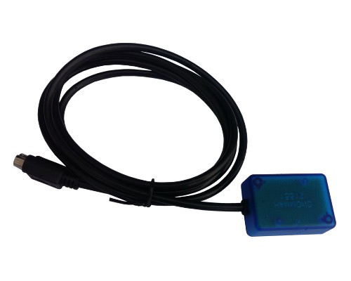
9. Connecting to PC
Initial configuration of WX3in1 Plus 2.0 should be done via USB interface with WX3in1 Plus 2.0 Configurator software.
WX3in1 Plus 2.0 enters into configuration mode only when USB cable is detected while powering up and it is indicated by “PC/PACKET” led blinking.
To connect to your computer, follow these steps:
Power off the WX3in1 Plus 2.0 device,
Connect the USB cable to your computer,
Power on the WX3in1 Plus 2.0 device,
Turn on the Configurator application.
After connecting and powering, WX3in1 Plus 2.0 is detected in Windows as a new USB-HID device (USB VID 0483, PID A124).
Please remember to disconnect the device from USB and cycle power after configuration. Device will not operate when USB cable is connected after reboot, USB is used only for configuration and firmware update.
No device drivers are necessary because standard HID support is present in all Windows operating systems.
Now you can simply use WX3in1 Plus 2.0 Configurator application to read, modify, write configuration to the device. The following image shows the application window.
Configurator v1.13 layout (reconstructed)
10. Description of configuration software
In this chapter we will discuss all the Configurator application settings and describe its influence on the device operation. The value ranges accepted by the Configurator are listed in Appendix B.
10.1. Reading configuration from the device
To read the configuration from the device you must use the “Read config” button. After this action, the program will download current configuration values from WX3in1 Plus 2.0 internal memory.
10.2. Writing configuration to the device
After entering configuration values in Configurator application, choose “Write config” to upload current configuration to WX3in1 Plus 2.0 internal memory.
10.3. Firmware update
If you download a new WX3in1 Plus 2.0 Configurator application version, you should also update device firmware to be compatible with current Configurator version.
Starting with version 1.01, WX3in1 Plus 2.0 firmware is merged into the Configurator executable, so there is no separate firmware file. To update firmware of the device, please click on the “Upload firmware” button. Firmware update starts automatically. Then wait for the update to complete.
Don't worry, it is not possible to “brick” or damage the device with this operation. If anything goes bad, you will simply need to try again with firmware update function.
Please remember that you should update your device with the same Configurator and firmware version numbers. It is also always necessary to upload new configuration after flashing the device with new firmware versions. The device will not start if configuration and firmware versions do not match. If your device simply blinks all the leds when powered up, it means that your configuration version does not match firmware version. If the device firmware version does not match the Configurator version, the Configurator shows the message “Uncompatible firmware version” with both version numbers and asks you to use the “Upload firmware” button.
10.4. Configuration import/export
With “Save to file” button you can export your current configuration from WX3in1 Plus 2.0 Configurator window to a file on your PC's disk drive. Similarly with “Read from file” button you can import configuration from a file to your WX3in1 Plus 2.0 Configurator application. These functions can be used to save your device's configuration and to transfer your device's configuration to recent Configurator and firmware versions.
Configuration files (*.cfg) are text files. Some configuration fields may change between firmware versions, so please check all Tabs after importing a file saved with an older Configurator version.
10.5. Radio Tab
“Callsign” – the callsign of your station with SSID extension. This field can be up to 6 characters long. The default SSID is 0 and allowed SSID's are between 0 and 15,
“Latitude” - north-south position of your radio station,
“Longitude” - east-west position of your radio station.
For APRS beacons latitude is encoded as “XXYY.ZZD” where XX are degrees, YY are minutes (1/60 of a degree), ZZ are hundredths of a minute, D can be N for north or S for south.
Longitude is encoded as “XXXYY.ZZD” where XXX are degrees, YY are minutes (1/60 of a degree), ZZ are hundredths of a minute, D can be E for east or W for west.
Example: 52°22.0′ N, 16°53.6′ E is written as 5222.00N and 01653.60E. You can easily find your coordinates in APRS format on aprs.fi map, they are displayed in upper-left corner of the screen.
“TX delay (ms)” – delay time in milliseconds for sending an APRS packet. It is the length of preamble sent before packet and necessary for radio receivers to synchronize with our packet. The recommended value is not less than 250ms,
“Quiet time (ms)” – minimum time off after the radio channel is busy. After this time next packet can be sent from the transmit buffer,
“Randomize quiet time” - this option adds some randomization to Quiet time value which changes every packet sent with a range selected in this box,
“PTT” – push-to-talk output selection, we can choose between two options:
“separate output” – PTT output pin is shorted to ground while broadcasting,
“2k2 resistor” - audio output is shorted to ground via 2k2 Ohm resistor, function used in some handheld radios for transmission enable,
“Squelch level” - this a squelch level selection, with lower values usable signal will be detected with lower signal amplitude. Default value of 1 should be the best option,
“Channel busy detect” - this option selects if channel busy is detected by input signal amplitude (“analog signal level”) or with proper packet start detection (“digital detect”). The second option allows to work with open-squelch on the radio, but it can lead to some packet collisions. The first option is default and should be used in most cases,
“Consecutive packet send” - this option will make your device send all the packets from TX queue one after another without any delays (“in bursts”), or with TX delay, Quiet time, and channel busy detection between every packet (“separately”). The first one is default and used by most APRS devices,
“Baudrate” - allows to select packet decoding/encoding method. In most cases 1200/AFSK is used. Please do not select 9600/GMSK if you do not know what you are doing (see also chapter 4.3),
“Output level” - this option selects level of audio output signal from WX3in1 Plus 2.0 to radio,
“Input amplifier” - this option selects amplification of input signal from radio to WX3in1 Plus 2.0.
If you are new to APRS or if you are running the device for the first time, you should change Callsign, Latitude and Longitude field to proper values for your station. These fields are important. You should also change PTT option to be compatible with your radio connection. Other options can be left unchanged as default values should work fine.
10.6. Digipeater Tab
Digipeater Tab contains several sub-tabs allowing to configure different digipeater options and filters. We will discuss all of them below.
10.6.1. Digipeater / Common settings
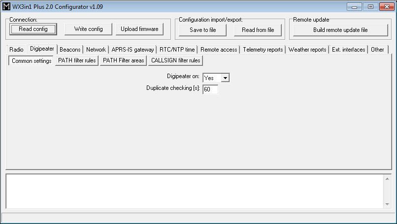
“Digipeater on” – Enables or disables a function of RF APRS packets digipeating,
“Duplicate checking (s)” – Time in seconds after which the next packet will be forwarded, if it has the same content as the previous one. This function allows you to ignore stations, which are flooding the network and also to ignore packets which were heard a while before and are heard again after being digipeated by other stations.
10.6.2. Digipeater / PATH filter rule
Here you can insert New-N Paradigm paths to be handled by WX3in1 Plus 2.0 digipeater function.
“Path (n-N)” – path name, WIDE, SP, etc.
“n>=” and “n<=” – minimum and maximum n for path to be forwarded, for example WIDEn-N with n>=1 and n<=3 will forward paths: WIDE3-3, WIDE3-2, WIDE3-1, WIDE2-2, WIDE2-1, WIDE1-1,
“Traceable” – if Yes, WX3in1 will add its own callsign to the path, if No, it will not do that,
“Enable if” – path filter rule can be disabled (Never), enabled (Always), or enabled only when there is no APRS-IS connection (No APRS-IS),
“Direct only” - packet will be digipeated only if there is no other digipeater callsign in its path (it was not digipeated by any other station before reaching us),
“Area ALL” - means that packets will be digipeated without area limit, no matter where the source station is located,
“Area RAD0” - packet will only be digipeated if it is located within RAD0 area (described below),
“Area RAD1” - packet will only be digipeated if it is located within RAD1 area (described below),
“Area RECT0” - packet will only be digipeated if it is located within RECT0 area (described below).
If you are not going to use area filters, then you need to leave “Area ALL” box checked to allow digipeating of all packets independently of their source station location.
The default rules accept n up to 7. In most APRS networks today the recommended maximum is n=2 (WIDE2-2), so you may want to set “n<=” to 2 for the WIDE rule. Please follow the recommendations of your local APRS network.
10.6.3. Digipeater / PATH filter areas
Here you can define area filters, which limit packet digipeating depending on origin station location. There are three different filters.
“area RAD0” - which is an area within a limited radius from our station location (our station's location is defined in “Radio Tab”),
“area RAD1” - which is an area within a limited radius from a point on the map defined by its latitude and longitude,
“area RECT0” - which is a rectangle area defined by north-western and south-eastern points on the map (using appropriate latitude and longitude for each point).
Area filters only support the static latitude/longitude defined in Radio Tab (not the GPS-based position). Distances are entered in kilometers (1 - 3000 km).
10.6.4. Digipeater / Callsign filter rules 20 entries since v1.11
“black list” (“General rule:” set to “Allow all, except below” - all callsigns will be digipeated except listed below), or
“white list” (“General rule:” set to “Deny all, except below” - only callsigns listed below will be digipeated).
Since firmware v1.11 the list has 20 entries (10 in older versions). Each entry has a callsign (up to 6 characters) and an SSID (0 - 15, or * for any SSID). In the callsign field the * wildcard masks all characters to the end of the pattern, and the ? wildcard (since v1.07) masks a single character (except space).
If you are new to APRS or if you are running the device for the first time, you can leave all the options as default. By default, the device will digipeat all packets with WIDEn-N string in path and also local Polish SPn-N string (if you are not from Poland you can remove SP from the second row, it is placed here as an example of a local New-N path).
10.7. Beacons Tab
Beacons Tab has three sub-tabs: “Beacons 1-4”, “Beacons 5-8” and, since firmware v1.12, “GPS SmartBeaconing” (chapter 10.7.1).
Configurator v1.13 layout (reconstructed)
“Dest” – destination field of a beacon packet. It would be best to leave it default which will allow your device to be recognized as WX3in1 Plus 2.0 (and added to working stations callsign list on my webpage),
“Path” – APRS path (default value of WIDE2-2 will allow your device to be digipeated by most nearby digipeaters), if you leave this field empty, beacon will be sent without path,
“RF[min]“ – beacon transmit rate to RF (expressed in minutes, 5 - 1440), beacon will not be sent if this field is set to 0,
“IS[min]“ – beacon transmit rate to APRS-IS (expressed in minutes, 5 - 1440), beacon will not be sent if this field is set to 0,
“Enable if”“No APRS-IS” since v1.10 – condition under which the beacon is sent:
“Never” – beacon is disabled,
“Always” – beacon is always enabled,
“GPS fixed” – beacon is sent only when the GPS receiver has a valid position fix (useful for beacons with <gpslat>/<gpslong>),
“GPS not fixed” – beacon is sent only when there is no valid GPS fix (e.g. a fallback beacon with the static position from Radio Tab),
“No APRS-IS” – beacon is sent only when there is no APRS-IS connection,
“Message“ – APRS packet information field content (up to 95 characters). Beacon will not be sent if this field is left empty.
To properly generate a message field structure, please read the information on the APRS packet format.
<date>z – time and date in the format DDHHMM (day/hour/minute),
<lat>/<long> - station latitude and longitude,
„-” - together with “/” sign between <lat> and <long> defines a station symbol (House in this example), please refer to the table of symbols at http://aprs.pl/ikony.htm,
WX3in1Plus2.0 U=<volt>V,T=<temp>C – beacon information field, <volt> will be replaced with input voltage reading, <temp> will be replaced with temperature from external temperature sensor.
As you can see in the above example, WX3in1 Plus 2.0 allows to use some special strings, which are automatically replaced with corresponding values. The full list is also shown in the Configurator after clicking the “Special strings” button:
<date> - inserts current date in DDHHMM (day/hour/minute) format,
<lat> - inserts your stations latitude defined in “Radio” Tab,
<long> - inserts your stations longitude defined in “Radio” Tab,
<gpslat> - inserts latitude received from GPS,
<gpslong> - inserts longitude received from GPS,
<gpsdate> - inserts time received from GPS in format: DDHHMM,
<volt> - inserts measured input voltage,
<temp> - inserts temperature from rear panel thermometer input (Celsius),
<tempf> - inserts temperature from rear panel thermometer input (Fahrenheit),
<gamma> - inserts gamma radiation from RSS-131 gamma monitor.
Important note: Sometimes I see that users try to replace special <date>, <lat>, <long>, <volt> strings with direct values. You don't need to do that. If you set for example “<date>” string in your beacon, current date will be placed instead of this string. The same for “<lat>”, “<long>”, “<volt>”, etc.
If you are new to APRS or if you are running the device for the first time, you can leave all the options as default. By default, the device will send standard beacon packet with time, latitude, longitude and current voltage reading both to RF and APRS-IS every 5 minutes. It should make your station appear on the map on aprs.fi.
This sub-tab configures position reports generated from the GPS receiver connected to a serial port (see chapter 6 and chapter 10.14.5). These reports are independent from Beacons 1-8.
“SmartBeaconing” – “Enabled” or “Disabled”, enables GPS SmartBeaconing position reports,
“Position encoding protocol” – format of the position report:
“Mic-E” – the most compact format, position, course and speed are encoded in the destination field and the information field,
“Plain text” – standard uncompressed APRS position report (DDMM.MM format),
“Base-91” – compressed APRS position report,
“SmartBeaconing settings” group:
“Slow Speed [km/h]” and “Slow Period [s]” – below the slow speed a report is sent every slow period,
“Fast Speed [km/h]” and “Fast Period [s]” – above the fast speed a report is sent every fast period. Between slow and fast speed the reporting interval changes with the speed,
“Min Turn Angle [deg]”, “Turn Slope” and “Min Turn Time [s]” – “corner pegging” settings of the standard SmartBeaconing algorithm. An extra report is sent when the course changes by more than the turn threshold, which is the minimum turn angle plus the turn slope divided by the current speed (the threshold is bigger at low speed). Turn reports are never sent more often than the minimum turn time.
Default values are: Min Turn Angle 27°, Turn Slope 410, Min Turn Time 5 s, Slow Speed 8 km/h, Slow Period 1800 s, Fast Speed 95 km/h, Fast Period 90 s.
“Report encoding settings” group:
“Symbol code” and “Symbol table” – APRS symbol of the moving station (default “>” and “/”, a car),
“Mic-E message” – Mic-E status message: Off Duty, En Route, In Service, Returning, Committed, Special, Priority or Emergency (used with Mic-E encoding). Use “Emergency” only in a real emergency,
“Path” – up to three path elements with SSID (default WIDE1-1, WIDE2-1),
“Status text” – optional text appended to the position report (up to 40 characters),
“Time” – timestamp in the report: None, “Hour, min, sec” or “Day, hour, min” (Mic-E reports have no timestamp field),
“Course/Speed” – include course and speed in the report (Yes/No),
“Altitude” – include altitude from GPS in the report (Yes/No).
SmartBeaconing is useful for mobile installations of the device. For a fixed digipeater or I-Gate leave it “Disabled” and use Beacons 1-8.
10.8. Network Tab
Currently there are two network configuration methods possible:
“DHCP” - which is commonly used method where relevant network settings are automatically received from DHCP server (most likely a network router),
“Static IP” - which allow to configure all network settings manually.
If you wish to use “Static IP”, then you need to know your network configuration and properly set relevant fields manually:
“IP Address” - IP address of your WX3in1 Plus 2.0 device, you should select a free IP address from your local network,
“IP Mask” - subnet mask of your local network,
“Gateway” - IP address of your network router or other device which provides internet access on your local network,
“DNS” - this should be your internet provider's domain name server address, in most situations you can also use your routers IP address, as most routers do DNS query relaying.
Above network settings must be set correctly to match your local network and internet access configuration.
If you use DHCP for a device installed in a remote location, it is a good idea to reserve its IP address in the DHCP server (router) configuration. Firmware v1.06 fixed APRS-IS hang-ups when the DHCP server assigned a new IP address, and v1.07 fixed unnecessary lease renewal requests with leases longer than 31 days.
10.9. APRS-IS gateway Tab
This Tab contains all settings related to APRS-IS T2 server connection, including packet forwarding from RF to APRS-IS (i-gating) and APRS-IS to RF packet relaying.
10.9.1. APRS-IS gateway / APRS-IS server Tab
“APRS-IS servers” - domain names or IP addresses of APRS-IS T2 servers which should be connected by WX3in1 Plus 2.0. A list can be found on this page: http://www.aprs2.net/serverstats.php.
“APRS-IS port” - IP ports of APRS-IS servers, in most cases default port 14580 should work fine.
“APRS-IS login username” - this should be your callsign with ssid, the same as on Radio Tab,
“APRS-IS login password” - this should be a password (passcode) for your callsign, passwords should be generated by your APRS-IS server sysop,
“Inactivity reconnect timeout [m]” – this field defines the amount of time after which WX3in1 Plus 2.0 will try to reconnect to APRS-IS server. Most APRS-IS servers send “keepalive” string every few tens of seconds so in case of no data received for a longer time we can assume that something gone wrong with the connection. Default value of 3 minutes should work fine.
“APRS-IS server filter settings” - this is a global filter setting string which is sent to APRS-IS server after logging and it tells the server which packets you want to receive from it. Default value of “m/40” tells the server to send all posits, objects from stations within 40 km radius. Messages addressed to these stations will also be received from the server.
APRS-IS server filter setting may be potentially dangerous if you are not sure what you are doing. Please avoid changing filter to a very wide setting to avoid being flooded with packets from APRS-IS server. All packets received from APRS-IS are then processed according to “I-Gate” Tab settings and they can be forwarded to RF as “third-party packets”.
10.9.2. APRS-IS gateway / APRS-IS (common) Tab
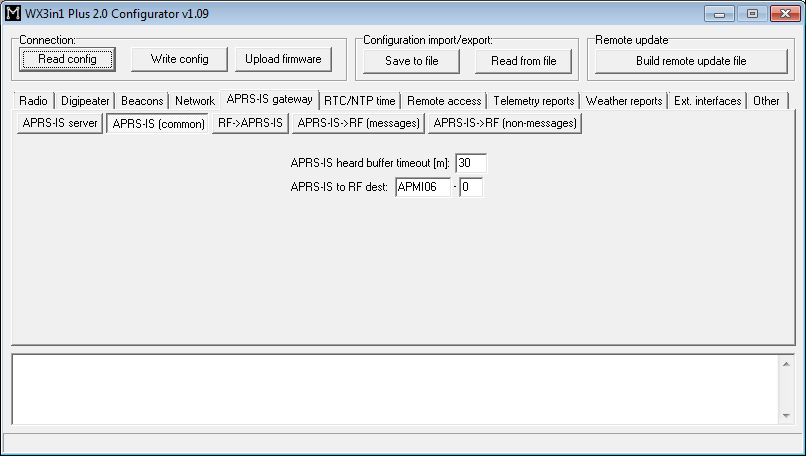
“APRS-IS heard buffer timeout [m]” - determines the time (in minutes) after which callsigns of stations heard from APRS-IS server are removed from the “APRS-IS heard” buffer.
We need to store callsigns of stations heard from APRS-IS because:
1) Message packets addressed to these stations should not be forwarded from APRS-IS to RF (it is assumed that if a station was heard from APRS-IS, then it has an internet connection so it has already received this message packet directly from APRS-IS and it is not necessary to forward it to RF),
“APRS-IS to RF dest” - default destination field applied to all packets forwarded from APRS-IS to RF.
10.9.3. APRS-IS gateway / RF->APRS-IS
“Gate RF packets to APRS-IS” - if enabled, device will forward all packets received from RF to APRS-IS.
10.9.4. APRS-IS gateway / APRS-IS->RF (messages)
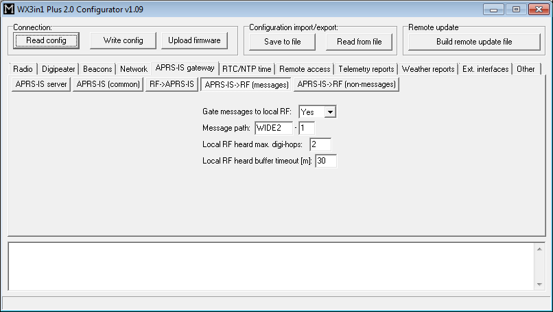
Please note that below we will call packets of “message” type as “message packets” or “messages” and all other packets as “non-message” packets.
“Gate messages to local RF” - if enabled, device will forward message packets to stations heard in local RF,
“Message path” - default path applied to message packets forwarded from APRS-IS to RF,
“Local RF heard max. digi-hops” - stations which packets were received after being digipeated by number of digipeaters not higher than defined in this field, will be considered as stations in local RF,
“Local RF heard buffer timeout [m]” - determines the time (in minutes) after which stations heard from local RF are removed from the “local RF heard” buffer.
Difference between local RF heard buffer and RF heard buffer is that:
1) Local RF heard buffer stores station callsigns heard within limited number of digi-hops, 2) RF buffer stores all other station callsigns heard from RF.
Local RF heard stations can be recipients of messages because they are located nearby, and RF heard stations can't be recipients of messages because, although heard from RF, they are located too far.
We need to store callsigns of stations heard from local RF because:
1) Only these stations can be recipients of message packets. 2) When a message packet sender is heard by our station from local RF, then its message shouldn't be forwarded from APRS-IS to RF (because we heard this station before from local RF so it is somewhere nearby and probably has already sent the same message packet directly to RF).
“Gate non-message packets to RF” - if enabled, non-message packets will be forwarded from APRS-IS to RF based on a filter rules discussed below,
“Non-message path” - default path applied to non-message packets forwarded from APRS-IS to RF,
“Gate if source station heard via RF” - if enabled, the device will forward packets from APRS-IS to RF even if source station was heard on RF. Should be disabled,
“RF heard buffer timeout [m]” - determines the time (in minutes) after which stations heard from RF are removed from the “RF heard” buffer.
We need to store callsigns of stations heard from RF because:
1) If a station is heard from RF and “Gate if source station heard via RF” is disabled, then non-message packets from such station will not be forwarded from APRS-IS to RF. 2) When a message packet sender is heard by our station from RF, then its message shouldn't be forwarded from APRS-IS to RF (because we heard this station before from RF so it is somewhere nearby and probably has already sent the same message packet directly to RF).
“Max. packets per 1 / 2 / 3 min” - maximum number of packets forwarded from APRS-IS to RF in 1 / 2 / 3 min time periods. This option limits number of packets forwarded from APRS-IS to RF to prevent channel abuse.
“Filter setup”24 entries since v1.11 - this button opens the filter for non-message packets sent from APRS-IS to RF (UI-View style). By default all packets are denied. Then filter entries are processed from first to last field checking for allowed packet type and station. The order of entries is important: comparison stops when a pattern match is found, so an entry which allows or denies something is not tested again in next fields. Callsigns can use the * wildcard (all characters to the end of the pattern) and the ? wildcard (a single character, except space). SSID can be 0 - 15 or *. Possible entry types are:
Not used – this field will be skipped,
Allow all – all packets will be allowed from station defined in callsign/ssid fields,
Deny all – all packets will be denied from stations defined in callsign/ssid fields,
Beacons – beacon type packets starting with '!', '/', '=', '@' symbols from stations defined in callsign/ssid fields,
Destination – all packets with destination field defined in callsign/ssid fields,
Telemetry – all telemetry parameters message packets (PARM, UNIT, EQNS, BITS) from station defined in callsign/ssid fields,
Bulletin – bulletin packets from stations defined in callsign/ssid fields.
Please remember that packets processed through above filter must first be received from APRS-IS server. Therefore you should also use “APRS-IS server filter settings” string (in APRS-IS Tab, default “m/40” should be good for initial tests) to tell APRS-IS server that you want to receive anything.
APRS-IS to RF forwarding is a complicated topic. All above settings were introduced to allow balanced and limited forwarding because RF capacity is much narrower than internet and shouldn't be overflowed with unnecessary traffic. Default setting of this Tab will allow you to forward everything from RF to APRS-IS (not dangerous) and forward messages from APRS-IS to local RF stations (shouldn't generate a lot of traffic). Other packets will not be forwarded from APRS-IS to RF.
10.10. RTC/NTP Tab
“Upload PC system time on config write” - if this option is selected, application will ignore date and time fields visible below and will upload your PC system time on configuration write,
“Year”, “Month”, “Day”, “Hour”, “Minute” - user-defined date and time for WX3in1 Plus 2.0,
“Use NTP server” - if this option is selected, WX3in1 Plus 2.0 will periodically connect to defined network time server and will synchronize its clock,
“NTP server” - domain name or IP of network time server, in some cases this can also be your router's IP, if NTP option is active on your local network router.
Internal Real Time Clock is updated when the device exits config mode and enters normal mode. To get exact time please reboot your unit to normal mode quickly after config write.
If you enable “Use NTP server” option, time will be updated from Network Time Protocol server on the internet. The default server is a Polish pool server (0.pl.pool.ntp.org). You can use a server of your own country pool, for example 0.es.pool.ntp.org in Spain, or the global pool.ntp.org.
10.11. Remote access Tab
This Tab contains all settings related to remote access to the device using different methods and protocols. Since firmware v1.10 it has five sub-tabs: WWW, Telnet, KISS via TCP/IP, APRS-IS simple server and Statistics upload.
10.11.1. Remote access / WWW
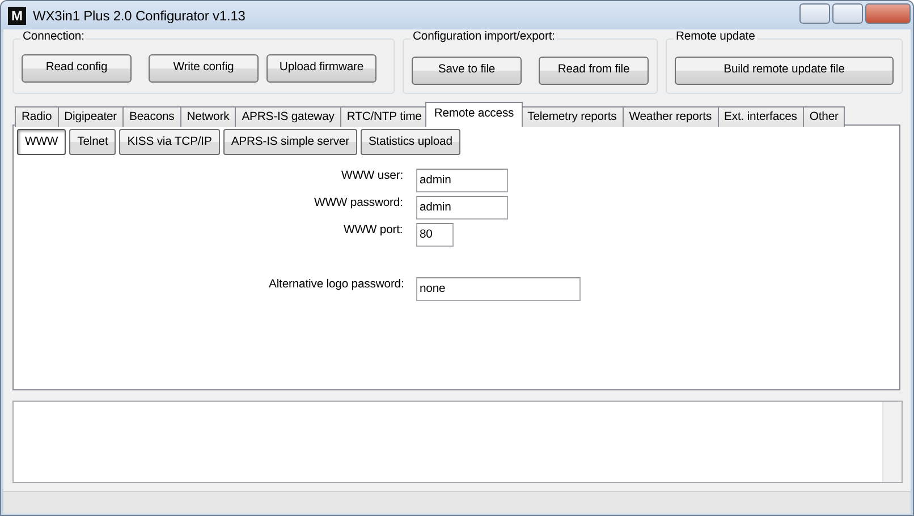
Configurator v1.13 layout (reconstructed)
“WWW user” - username to access your WX3in1 Plus 2.0 web service,
“WWW password” - password to access your WX3in1 Plus 2.0 web service,
“WWW port” - web service IP port number,
“Alternative logo password”not described before - password which enables an alternative logo on the device web pages. Leave the default value “none” if you were not given such a password.
To access your WX3in1 Plus 2.0 web service you should use a web browser and connect to WX3in1 Plus 2.0 IP address defined in Network Tab. For example, to connect to a device with IP address of 192.168.2.2 you should write http://192.168.2.2/ in your web browser address field.
The default user name and password for WWW, telnet and APRS-IS simple server are “admin”/“admin”. Please change them before you connect the device to a network which can be reached from the internet.
10.11.2. Remote access / Telnet
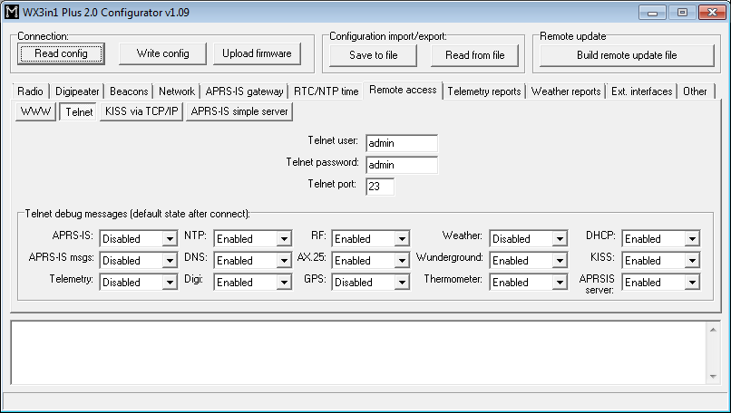
“Telnet user” - username to access your WX3in1 Plus 2.0 telnet service,
“Telnet password” - password to access your WX3in1 Plus 2.0 telnet service,
“Telnet port” - telnet IP port number,
“Telnet debug messages” - options in this group allow to select which telnet debug messages are on by default every time you connect to your WX3in1 Plus 2.0 with telnet terminal.
Telnet access can be very useful for debugging of your WX3in1 Plus 2.0 configuration and the whole installation. Skilled user can resolve most problems by analyzing debug messages sent by WX3in1 Plus 2.0 in a fashion similar to Linux system log. Recommended telnet client is Putty, a free implementation of terminal for Windows and Linux platforms: http://www.chiark.greenend.org.uk/~sgtatham/putty/.
10.11.3. Remote access / KISS via TCP/IP
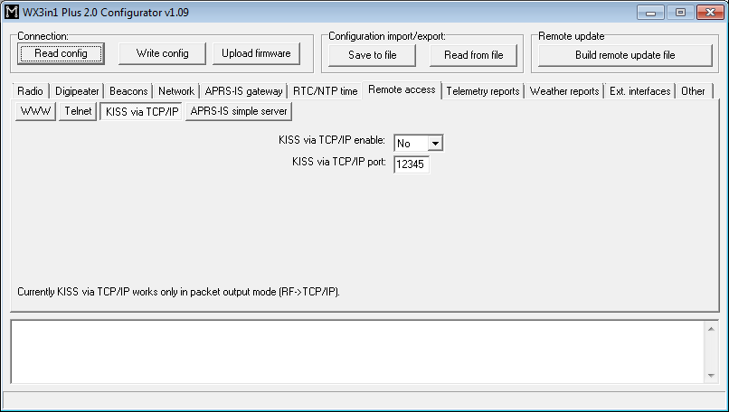
“KISS via TCP/IP enable” - enables or disables KISS via TCP/IP feature,
“KISS via TCP/IP port” - KISS via TCP/IP port number.
10.11.4. Remote access / APRS-IS simple server
“APRS-IS simple server enable” - enables or disables APRS-IS simple server feature,
“APRS-IS simple server port” - APRS-IS simple server port number,
“Username” - username to access APRS-IS simple server,
“Password” - password to access APRS-IS simple server,
“Forward traffic APRS-IS T2 → APRS-IS simple server” - if enabled, then all traffic from APRS-IS T2 server (specified in APRS-IS gateway / APRS-IS server Tab) will be forwarded to APRS-IS simple server socket,
“Forward traffic APRS-IS simple server → APRS-IS T2” - if enabled, then all traffic from APRS-IS simple server socket will be forwarded to APRS-IS T2 server (specified in APRS-IS gateway / APRS-IS server Tab).
This feature must be used with caution and you should know what you are doing before using it. With APRS-IS simple server feature you can send packets to RF and T2 servers via WX3in1 Plus 2.0 without any limitations.
10.11.5. Remote access / Statistics upload NEW v1.10
“Device ID” - numeric identifier of your device on the statistics server (up to 5 digits),
“Upload server hostname” - domain name or IP address of the statistics server (up to 48 characters),
“Upload server port” - TCP port of the statistics server (0 - 65535, usually 80),
“Upload server path” - path of the server script which receives the statistics (up to 32 characters, default “APRS/aprs_stat.php”),
“Upload interval [min]” - how often statistics are sent (1 - 240 minutes).
The server side is not part of the device. Use this feature only if you have a server prepared to receive the statistics, otherwise leave it disabled. The default values (Device ID 123, server 192.168.2.1) are only examples.
10.12. Telemetry reports Tab
This Tab contains all settings related to telemetry reports feature present in APRS protocol. Telemetry reports allow to send various data to APRS, which then can be plotted on graphs by WWW services connected to APRS/APRS-IS network (like well-known aprs.fi service).
You can find more useful information about telemetry reports format in APRS specification: http://aprs.org/doc/APRS101.PDF, page 68.
10.12.1. Telemetry reports / Report settings
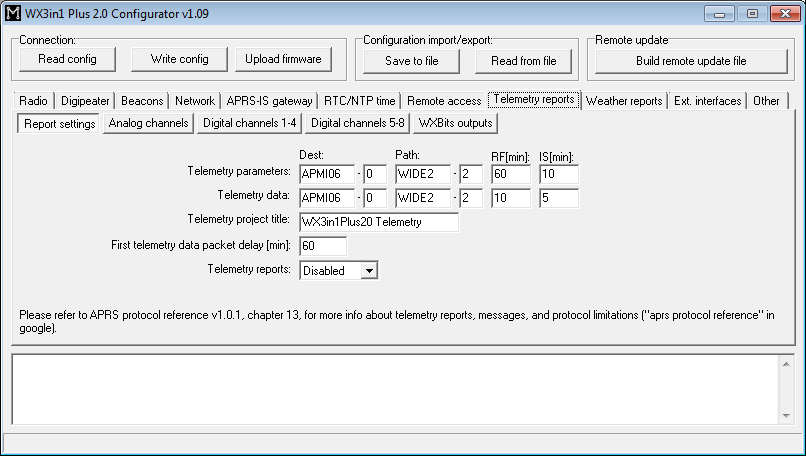
“Telemetry parameters” – this group of fields defines settings of PARM, UNIT, EQNS, and BITS parameter packets which describe the telemetry data sent by the device,
“Dest” – destination field of a telemetry parameters packet,
“Path” – APRS path (default value of WIDE2-2 will allow your device to be digipeated by most nearby digipeaters), if you leave this field empty, packet will be sent without path,
“RF[min]“ – telemetry parameters packet transmit rate to RF (expressed in minutes), packet will not be sent if this field is set to 0,
“IS[min]“ – telemetry parameters packet transmit rate to APRS-IS (expressed in minutes), packet will not be sent if this field is set to 0,
“Telemetry data” – this group of fields defines settings telemetry data reports,
“Dest” – destination field of a telemetry data packet,
“Path” – APRS path (default value of WIDE2-2 will allow your device to be digipeated by most nearby digipeaters), if you leave this field empty, packet will be sent without path,
“RF[min]“ – telemetry data packet transmit rate to RF (expressed in minutes), packet will not be sent if this field is set to 0,
“IS[min]“ – telemetry data packet transmit rate to APRS-IS (expressed in minutes), packet will not be sent if this field is set to 0,
“Telemetry project title” - this is a project name associated with the telemetry station, sent in BITS message (up to 23 characters),
“First telemetry data packet delay [min]” - delay for the first telemetry data packet, it allows to gather data (especially for 10-min and 60-min report) after device power-up,
“Telemetry reports” - if disabled, no telemetry parameters or telemetry data messages will be sent.
10.12.2. Telemetry reports / Analog channels
This Tab defines 5 analog channels available in APRS telemetry reports. You can select many different sources for channels data, including external WXTelemetry module data (M), other external devices data (E) and device internal data (I).
“Name” - short name for the channel, length is limited by APRS standard and is different for different channel numbers,
“Units” - short name for units of data for the channel, length is limited by APRS standard and is different for different channel numbers,
“Source” - most important field, specifies what data will be send for particular channel, (M) sources are associated with WXTelemetry module and (I) sources are associated with device's internal statistics and measurements,
“Coeff A”, “Coeff B”, “Coeff C” - these coefficients tell recipients of the telemetry reports how to decode analog value in following form: value = A*data*data + B*data + C,
“1 min average” - only functional for external telemetry module data (M), defines if reported values are averaged or not,
“Default parameters” – you should click this button after you change data source for the channel. It loads default coefficient values and name/units for a channel.
Sources available in Configurator v1.13:
Type
Sources
(M) WXTelemetry
Current1 (5A / 2.5A / 1.25A fullscale), Current2 (5A / 2.5A / 1.25A fullscale), Voltage1, Voltage2, Temperature (DS18B20), Temperature (DS18S20)
(E) external
Temperature (DS18B20), Temperature (DS18S20) – rear panel thermometer
Since firmware v1.12 packet statistics can be reported with values up to 999 (255 in older versions).
Important note: If you change “Source” field for a channel, you also need to change “Name”, “Units”, and “Coeffs” fields. Otherwise everyone else who receive your data (including web services like aprs.fi) will not be able do decode your reports properly. Every source has its own coefficients, names and units. With USB Configurator you can get default settings by clicking on “Default parameters” button. When changing configuration via WWW you need to set these fields manually (you can always write them down from USB Configurator application).
Firmware v1.01 corrected the coefficients of two default channels. If you used older values, change them back to: rear panel thermometer 0.0, 0.5, -64 (0.5 °C resolution) and input voltage 0.0, 0.075, 0.0.
10.12.3. Telemetry reports / Digital channels
This Tab defines 8 digital channels available in APRS telemetry reports. These tabs should be used when WXBits module is connected.
“Name” - short name for the channel, length is limited by APRS standard and is different for different channel numbers,
“Label” - short label for the channel, length is limited by APRS standard and is different for different channel numbers,
“Source” - most important field, specifies what data will be send for particular channel, (M) sources are associated with WXBits module,
“Inverted” - defines if channels should be reported as inverted in BITS telemetry message,
“Default parameters” – you should click this button after you change data source for the channel. It loads default name/label values for a channel.
Important note: If you change “Source” field for a channel, you also need to change “Name”, “Label”, and “Inverted” fields. Otherwise everyone else who receive your data (including web services like aprs.fi) will not be able do decode your reports properly.
10.12.4. Telemetry reports / WXBits outputs
This Tab defines what should be the default states for WXBits output channels. After power-up WX3in1 Plus 2.0 will constantly try to set outputs to the defined states, unless changed by the user.
10.13. Weather reports Tab
This Tab contains all settings related to weather reports. For weather reports you need to have a compatible weather station connected to WX3in1 Plus 2.0.
10.13.1. Weather reports / Weather beacon
“Dest” – destination field of a weather report,
“Path” – APRS path (default value of WIDE2-2 will allow your device to be digipeated by most nearby digipeaters), if you leave this field empty, weather report will be sent without path,
“RF[min]“ – weather report transmit rate to RF (expressed in minutes), report will not be sent if this field is set to 0,
“IS[min]“ – weather report transmit rate to APRS-IS (expressed in minutes), report will not be sent if this field is set to 0,
“Comment“ – This is a short comment which will be appended at the end of weather report (up to 32 characters).
10.13.2. Weather reports / Weather Underground
This tab is related to Weather Underground service which allows to upload and store weather data from your station.
“Weather reports to WeatherUnderground” – enables WeatherUnderground reporting in your WX3in1 Plus 2.0 device,
“Station ID” – ID of the station assigned when you were adding a station in WeatherUnderground account settings on their web page,
“Password” – password of your WeatherUnderground account (as far as I know, it is the same for all stations on your account if you have more than one),
“Normal upload server” – this is WeatherUnderground server name for report reception, you should leave it as is (weatherstation.wunderground.com),
“Rapid fire upload server” - this is WeatherUnderground server name for “rapid fire” report reception, you should leave it as is (rtupdate.wunderground.com),
“Weather send method” – this option allows you to select between “rapid fire” realtime frequent report update or normal report update every few minutes,
“Normal weather send rate [min]” – Frequency of normal report update (in minutes, 1 - 240),
“Rapid fire weather send rate [sec]” – Frequency of “rapid fire” realtime report update (in seconds, 5 - 60).
Weather Underground changed their servers after firmware v1.12 was released. Firmware v1.13 contains the fix needed for these changesv1.13, so please use firmware v1.13 for Weather Underground reporting. Weather Underground may change its service again in the future. If reports stop, check the “Wunderground” telnet debug messages.
10.14. External interfaces Tab
This Tab is related to settings of all external devices and interfaces which may be connected to WX3in1 Plus 2.0 using rear panel serial ports.
10.14.1. External interfaces / RS-232 ports
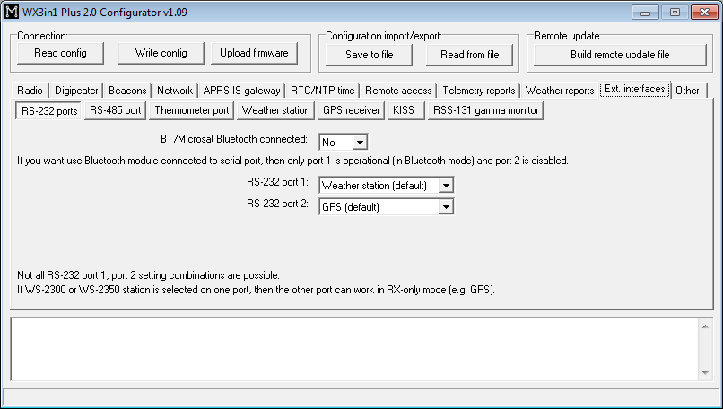
“BT/Microsat Bluetooth connected” - enable this if you have BT/Microsat Bluetooth interface connected to device serial port.
If you want Bluetooth module connected to serial port, then only port 1 is operational (in Bluetooth mode) and port 2 is disabled.
“RS-232 port 1” - selection of serial port 1 function: None, Weather station (default), GPS, RSS-131 gamma monitor or KISS,
“RS-232 port 2” - selection of serial port 2 function: None, Weather station, GPS (default), RSS-131 gamma monitor or KISS.
Not all RS-232 port 1, port 2 setting combinations are possible. If WS-2300 or WS-2350 station is selected on one port, then the other port can work in RX-only mode (e.g. GPS).
10.14.2. External interfaces / RS-485 ports
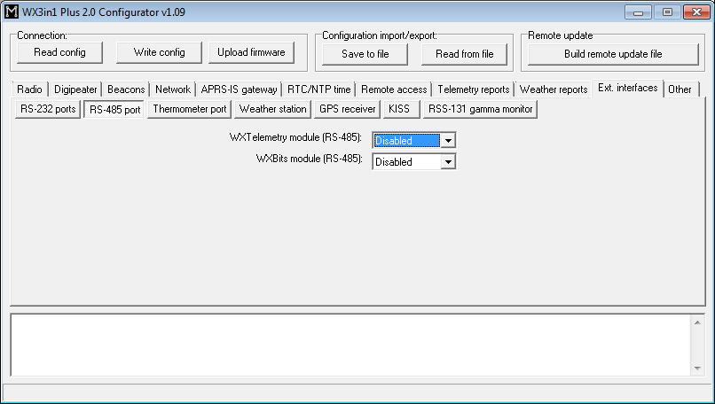
“WXTelemetry module (RS-485)” - enables or disables WXTelemetry module support,
“WXBits module (RS-485)” - enables or disables WXBits module support.
10.14.3. External interfaces / Thermometer port
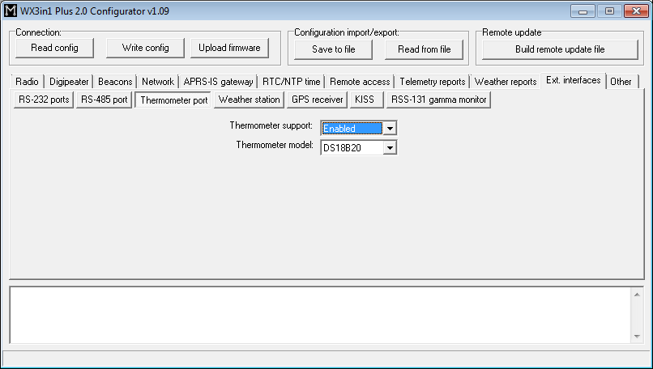
“Thermometer support” - enables or disables support of thermometer connected to device rear panel,
“Thermometer model” - thermometer model selection (DS18B20 or DS18S20).
10.14.4. External interfaces / Weather station
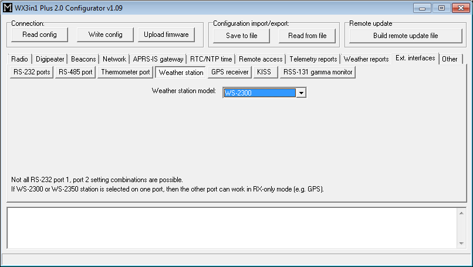
“Weather station model” - selection of weather station model connected to WX3in1 Plus 2.0 serial port.
10.14.5. External interfaces / GPS receiver
“GPS module baudrate” - selection of GPS module communication baudrate (1200 - 19200). Firmware v1.01 fixed this setting, in v1.00 GPS always worked at 9600 baud.
10.14.6. External interfaces / KISS
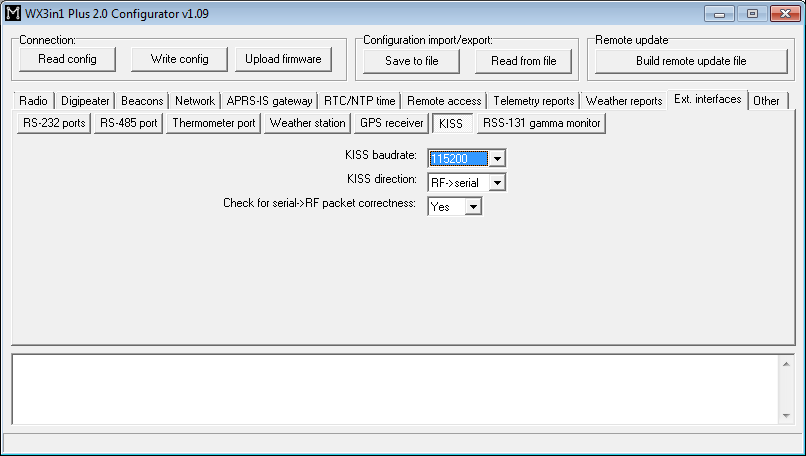
“KISS baudrate” - KISS packet communication baudrate setting,
“KISS direction” - selects KISS direction:
“RF->serial” - only output of packets received from RF,
“both” - output of packets received from RF and forwarding of packets from serial port to RF,
“Check for serial->RF packet correctness” - if enabled, then it tries to prevent forwarding of corrupted or malformed packets from serial port to RF.
This tab is related to settings of specialized RSS-131 gamma monitor used to monitor radiation. Feature was added in firmware v1.07 on user request. If you need any more info about support of this radiation monitoring device, please contact us by email.
Configurator v1.13 layout (reconstructed)
“RSS-131 baudrate” - serial port baudrate of the gamma monitor (2400, 4800, 9600 or 19200),
“Units range” - scale of the reported value (1.000 = 1u, 10u, 100u, 1m, 10m or 100m).
To use the gamma monitor, select “RSS-131 gamma monitor” as the function of one of the RS-232 ports (chapter 10.14.1). The measured value can be sent in beacons with the <gamma> special string (chapter 10.7).
10.15. Other Tab not described before
10.15.1. Other / Voltage measurement
Configurator v1.13 layout (reconstructed)
“Voltage measurement calibration” - correction of the input voltage measurement from -5.0% to +5.0% in 0.5% steps (default +/- 0%). This option was added in firmware v1.07. Measure the supply voltage with a good multimeter and choose the correction which makes the voltage shown by the device (telnet, WWW, <volt> beacon string) match it.
11. Telnet interface
Telnet interface is a very good method to see what happens inside of your WX3in1 Plus 2.0 device. It provides you with a lot of debugging messages and statistics, which allows you to locate any potential problems and solve them.
11.1. Telnet client software
To connect to WX3in1 Plus 2.0 telnet interface you will need to download one of telnet client applications available over the internet. I recommend you to use an open source “putty” application for this task. You can find it here: http://www.putty.org/. On Linux you can also use the standard telnet command.
To configure “putty” as a telnet terminal for WX3in1 Plus 2.0 you need to set the following fields (visible above):
Host Name (or IP address) – this is your WX3in1 Plus 2.0 network IP address,
Connection type: Telnet (this is important, as we want to use a simple telnet interface),
Port – this should be set the same as “Telnet port” in your device's configuration.
After setting proper values you can save them with a “Save” button.
Connect to your device with “Open” button. Then you should see a black window of your telnet terminal with a prompt for your “Username” and “Password”. Use the values from your device's configuration.
11.2. Telnet commands
For a list of available WX3in1 Plus 2.0 telnet commands please issue “help” command, you should see a full list as below:
Telnet command list (captured with firmware v1.09)
Telnet command list can be different for new firmware versions. We will not discuss all possible commands in this section. Just a short description of command types:
print – used to print some data in your telnet terminal window,
send – used to send test packets to RF,
debug – used to turn on or off some debug messages in your telnet terminal window,
update – used for remote firmware update function,
rs485 – used to set levels on RS-485 bus for cable connection test,
wxbits – used to read WXBits inputs and change WXBits output levels.
12. Remote firmware update via TFTP
WX3in1 Plus 2.0 allows you to make a remote firmware update via the internet using TFTP protocol.
General rule for WX3in1 Plus 2.0 firmware updates is: always both firmware and configuration are being updated to make sure that configuration is compatible with firmware version.
For this reason it is very important to set correct IP settings in configuration before generating a RUF file and making an update or you will lose contact with your device installed in remote location!
Remote firmware update procedure is as follows:
Run your WX3in1 Plus 2.0 Configurator application,
Now you need to set all your device configuration settings, with particular emphasis on Network Tab IP settings. If you previously exported your configuration using “Configuration import/export->Save to file” button, then you can reload it using “Configuration import/export->Read from file” button,
Generate a remote update file using “Build remote update file” button (the default file name is wx3in1plus20.ruf). The firmware is taken from the Configurator executable, so the firmware and configuration versions in a RUF file always match,
Login to your device via telnet (more information available in “Telnet interface” chapter),
Issue a telnet “update enable” command to enable TFTP function in your WX3in1 Plus 2.0 device,
Now you need to use your preferred TFTP client to upload the remote update file. In Windows with enabled built-in TFTP feature, use a “tftp -i <wx3in1 IP address> PUT wx3in1plus20.ruf” command in the command line. On Linux you can use for example “tftp -m binary <wx3in1 IP address> -c put wx3in1plus20.ruf” (tftp-hpa client),
After RUF file upload is finished you should see in telnet command line a following information: “(USER) Flash write finish, please wait for checksum verification” and after a few seconds: “(USER) Checksum OK, use "update burn" command to copy firmware to program memory.”
Issue an “update burn” command to write firmware to device program memory.
After a few seconds device will reboot, closing all connections and within next few seconds it should start with updated firmware/configuration.
It is not possible to “brick” the device with damaged or corrupted remote update file. The whole operation is protected with CRC checksums and it will not allow to make a mistake.
But if you set incorrect IP settings, your device will simply power-up after update with incorrect network settings and you will lose contact with it. Always make sure that IP settings are correct before generating a RUF file.
TFTP function works using UDP port number 69, so this port number must be properly forwarded on router, where WX3in1 Plus 2.0 is connected. Also telnet TCP port number 23 must be forwarded for telnet function which is necessary for the update.
13. Troubleshooting
In this section we will describe some possible problem encountered by users of WX3in1 Plus 2.0 device and try to help you to solve them.
Question: What should I set in APRS-IS Username and Password field?
Answer: In Username field you should set the same string as your WX3in1 Plus 2.0 callsign and SSID, separated by a hyphen. It should be written in uppercase. Example: SQ3PLX-5.
For your APRS-IS password you should ask your APRS-IS server operator. Some password generators are also available on the internet. The password (passcode) is calculated from the callsign without SSID, so it is the same for all SSIDs of your callsign. The default value 12345 is only a placeholder.
Question: I think that my device doesn't connect to APRS-IS or NTP (network time protocol server) or WeatherUnderground, etc. Why?
Answer #1: Check your WX3in1 Plus 2.0 device physical connection to your local network. After connecting RJ-45 network cable, you should check a led on your router or switch, it should be lit, indicating proper physical connection. If it is OK, go to answer #2.
Answer #2: Check your device's IP settings including IP address, IP mask, Gateway and DNS settings in “Network” Tab. Try to ping your device with “ping <wx3in1 ip address>” command from your operating system's command prompt. It should answer to your pings. Make sure that your gateway IP is set to your network router's IP. If it is not, you will still be able to ping the device, but it will not be able to get out of your local network. If it is OK, go to answer #3.
Answer #3: There can be many other different reasons. But if you feel that your settings are correct and it doesn't connect to any of these services, then it can be problem of your DNS settings. Below you can see how to check this over telnet:
00:25:47 (DNS) Server name not found, need to nslookup: time.nist.gov. 00:26:03 (DNS) Server name nslookup timed out: time.nist.gov.
The first line means that server “time.nist.gov” is not known to your WX3in1 Plus 2.0 device. That is OK, it just needs to ask DNS for this server's IP.
The second line means a problem: DNS server didn't answer to your query. You have probably misconfigured your DNS server IP. You should check your internet service provider's proper DNS IP address. In some cases you can also use your network router's IP address as a DNS, because most network routers are able to do DNS relaying. If your DNS settings are wrong, you will not be able to connect to any service with its domain name.
Answer #4 (Weather Underground only): make sure that the device runs firmware v1.13, see chapter 10.13.2.
Question: I'm not sure if my device receives APRS packets properly from my radio. How to check this?
Answer: The first and most obvious indicator of proper packet reception is a red “PC/PACKET” led of your WX3in1 Plus 2.0 device. It should work like that:
When there is something received and radio squelch is open, yellow “RADIO RX” led lights up,
Shortly after packet reception red “PC/PACKET” led lights up indicating proper packet reception and decoding.
You can also use telnet to check if anything was received properly. You should see a message indicating that an APRS packet was received. Next method is to check telnet “print stats” command or check WWW Statistics page to see if there is a non-zero value in “APRS packet received (CRC OK)” field. The WWW input adjustment page shows the input levels of the last 10 received packets.
Question: I'm not sure if my device sends APRS packets to RF properly. How to check this?
Answer: Well, the simplest method it so check with the second APRS radio if it receives any APRS packets from you.
You can also check on aprs.fi if your packets appear on APRS-IS, i-gated by some other devices near you. But to use this method you should:
make sure that there is an APRS i-gate near you that is able to hear your APRS packets,
disconnect RJ-45 cable from your WX3in1 Plus 2.0 device or turn APRS-IS off in your beacon settings, because otherwise all your packets will be visible on aprs.fi gated by your own device (even with radio disconnected).
You can also check telnet messages for any received packets which were sent by your device and then digipeated by other stations nearby. Also check that TX was not turned off globally in the WWW output adjustment page (firmware v1.09 and newer).
Question: How to check if my device receives data from weather station / telemetry module / GPS / thermometer?
Answer: Green “EXT” led is an answer. It should blink in short time intervals indicating that your external device is fine and that your WX3in1 Plus 2.0 device receives correct data. “EXT” led is shared between all external devices connected to your WX3in1 Plus 2.0. So if you want to use it as an indicator for one of them, you will need to disconnect others.
You should also see some external device debug messages over telnet which will give you an exact answer if they are connected properly.
Question: After some configuration changes and/or firmware update, my device constantly blinks all the leds and doesn't start up. Why?
Answer: It is necessary to use matching Configurator application, device configuration and device firmware versions. If you download new Configurator application version, you should always update device's firmware and rewrite device's configuration to make sure that all versions match.
Remember that you can't just update a firmware of the device. You always need to rewrite configuration. You also can't read your current configuration if you use different Configurator application and device firmware/configuration version.
Use “Configuration import/export” function to store configuration on your PC hard disk drive each time you change your device configuration settings. Then you will be able to import your configuration in new Configurator application.
Unfortunately these operations are unavoidable as device configuration often changes between firmware versions and new firmware does not understand older configuration.
Question: SmartBeaconing does not send any position reports. Why?
Answer: Check that “SmartBeaconing” is “Enabled” (chapter 10.7.1), that one RS-232 port is set to “GPS” with the correct “GPS module baudrate”, that the Bluetooth interface is not enabled, and that the green “EXT” led blinks (GPS position fixed). The “GPS” telnet debug messages show the data received from the GPS receiver.
Appendix A. Firmware change history
Changes of WX3in1 Plus 2.0 firmware and Configurator, from the changelog published with Configurator v1.13.
Version
Changes
v1.00
Initial firmware release.
v1.01
Corrected thermometer negative voltage display in beacons; temperature resolution 0.5 °C in telemetry for the rear panel thermometer (coefficients 0.0, 0.5, -64); input voltage telemetry coefficients 0.0, 0.075, 0.0 (were 0.0, 0.079, 0.0); trimmed input voltage display accuracy; corrected GPS baudrate setting (v1.00 always used 9600 baud); corrected and added Configurator hints; firmware merged into the Configurator executable.
v1.02
WWW input adjustment tools with WX3in1 Oscilloscope window; WWW output adjustment with 1200 Hz / 2200 Hz tone pattern; MAC address on network settings page; input levels of the last 10 received packets.
v1.03
Range-limited and area-limited digipeating; advanced “RF heard stations” list via WWW; experimental DHCP support; stricter latitude/longitude checking; beacon length 96 characters (was 64); bug fixes.
v1.04
Fixed Mic-E decoding for longitudes 0-9 degrees; minor Configurator and firmware fixes.
v1.05
Fixed config changes via WWW (bug in v1.03-v1.04); rewritten WS-23XX support code.
v1.06
Fixed DHCP client APRS-IS hang-ups when the DHCP server changed the IP address.
v1.07
KISS packet output; new “External interfaces” Tab with serial port function selection; RSS-131 gamma monitor support; fixed DHCP lease renewal every 60 s with leases over 31 days; <tempf> beacon string; ? wildcard in APRS-IS→RF filter and digipeater callsign filter; voltage measurement calibration.
v1.08
BT/Microsat Bluetooth module support; KISS via serial port (or Bluetooth) in both directions (TNC operation); KISS via TCP/IP packet output; APRS-IS simple server; fixed PeetBros and Davis support broken in v1.07; experimental PeetBros complete record mode.
v1.09
Experimental 9600/GMSK packet decoding/encoding; option to turn off TX globally (WWW output adjustment); extended APRS-IS simple server.
v1.10
Experimental statistics upload (Remote access → Statistics upload); “No APRS-IS” condition for beacon enable; device callsign in web page title.
v1.11
Callsign filter extended from 10 to 20 fields; APRS-IS packet to RF filter extended from 12 to 24 fields; firmware cleanups.
v1.12
GPS SmartBeaconing; maximum telemetry value for packet statistics changed from 255 to 999; new internal telemetry sources.
v1.13
Fix for Weather Underground support, needed after changes on their servers.
Appendix B. Configuration value ranges
Value ranges and field lengths checked by Configurator v1.13 when the configuration is written. If a value is out of range, the Configurator shows an error message in the message window.
Field
Allowed values
Callsign / SSID
up to 6 characters, too short callsigns are rejected / SSID 0 - 15
up to 95 characters, some characters are not allowed
IP address / mask / gateway / DNS
each octet 0 - 255
APRS-IS server port
0 - 65535
APRS-IS server name / NTP server name
up to 31 characters
APRS-IS server filter
up to 128 characters
APRS-IS reconnect timeout [min]
1 - 60
APRS-IS heard, local RF heard, RF heard buffer timeout [min]
1 - 240
Local RF heard max. digi-hops
0 - 8
Max. non-message packets per 1 / 2 / 3 min
1 - 240
Statistics upload port / interval [min] / device ID
0 - 65535 / 1 - 240 / up to 5 digits
Telemetry parameters / data tx rate [min]
5 - 1440
First telemetry data packet delay [min]
0 - 250
Telemetry project title
up to 23 characters
Weather report tx rate RF / APRS-IS [min]
5 - 1440
Weather report comment
up to 32 characters, some characters are not allowed
Weather Underground normal / rapid fire rate
1 - 240 min / 5 - 60 s
SmartBeaconing status text
up to 40 characters
Note: the Configurator uses the text “Statistics upload interval” in two error messages, “(0 - 65535)” and “(1 - 240)”. The first one most likely refers to the upload server port.